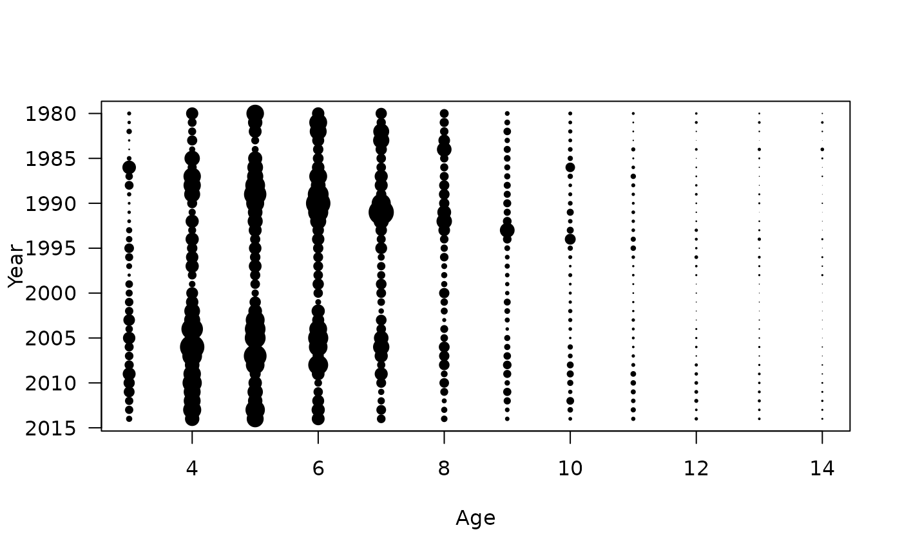
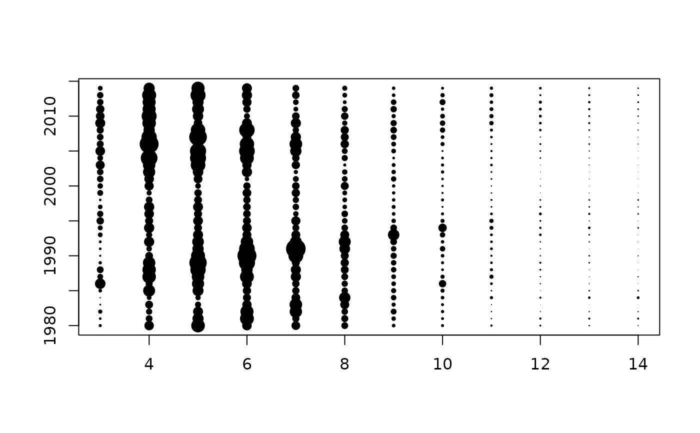

Catch at Age and Residuals
catch.d.RdCatch-at-age observed data and model residuals from Icelandic saithe assessment.
catch.d
catch.rFormat
Data frame containing three columns:
Year | year |
Age | age |
| and | Catch |
| catch (thousands of individuals) | or |
Resid | standardized residual |
Details
The data are from Tables 8.2 and 8.6 in the ICES (2015) fish stock assessment of Icelandic saithe.
Source
ICES (2015) Report of the North-Western Working Group (NWWG). ICES CM 2015/ACOM:07, pp. 240–246.
See also
bubbleplot is an effective way to visualize these data.
Examples
catch.t <- xtabs(Catch~Year+Age, catch.d)
catch.m <- as.matrix(as.data.frame(unclass(catch.t)))
# 1 Formula
bubbleplot(Catch~Age+Year, data=catch.d)
# Use rev=TRUE to get same layout as crosstab matrix:
print(catch.m)
#> 3 4 5 6 7 8 9 10 11 12 13 14
#> 1980 275 2540 5214 2596 2169 1341 387 262 155 112 64 33
#> 1981 203 1325 3503 5404 1457 1415 578 242 61 154 135 128
#> 1982 508 1092 2804 4845 4293 1215 975 306 59 35 48 46
#> 1983 107 1750 1065 2455 4454 2311 501 251 38 12 2 4
#> 1984 53 657 800 1825 2184 3610 844 376 291 135 185 226
#> 1985 376 4014 3366 1958 1536 1172 747 479 74 23 72 71
#> 1986 3108 1400 4170 2665 1550 1116 628 1549 216 51 30 14
#> 1987 956 5135 4428 5409 2915 1348 661 496 498 58 27 48
#> 1988 1318 5067 6619 3678 2859 1775 845 226 270 107 24 1
#> 1989 315 4313 8471 7309 1794 1928 848 270 191 135 76 10
#> 1990 143 1692 5471 10112 6174 1816 1087 380 151 55 76 37
#> 1991 198 874 3613 6844 10772 3223 858 838 228 40 6 5
#> 1992 242 2928 3844 4355 3884 4046 1290 350 196 56 54 15
#> 1993 657 1083 2841 2252 2247 2314 3671 830 223 188 81 12
#> 1994 702 2955 1770 2603 1377 1243 1263 2009 454 158 188 82
#> 1995 1573 1853 2661 1807 2370 905 574 482 521 106 35 13
#> 1996 1102 2608 1868 1649 835 1233 385 267 210 232 141 74
#> 1997 603 2960 2766 1651 1178 599 454 125 95 114 77 43
#> 1998 183 1289 1767 1545 1114 658 351 265 120 81 85 85
#> 1999 989 732 1564 2176 1934 669 324 140 72 25 28 22
#> 2000 850 2383 896 1511 1612 1806 335 173 57 33 17 7
#> 2001 1223 2619 2184 591 977 943 819 186 94 28 28 13
#> 2002 1187 4190 3147 2970 519 820 570 309 101 27 15 11
#> 2003 2284 4363 6031 2472 1942 285 438 289 196 28 29 15
#> 2004 952 7841 7195 5363 1563 1057 211 224 157 74 39 11
#> 2005 2607 3089 7333 6876 3592 978 642 119 149 89 46 12
#> 2006 1380 10051 2616 5840 4514 1989 667 485 118 112 86 31
#> 2007 1244 6552 8751 2124 2935 1817 964 395 190 43 36 20
#> 2008 1432 3602 5874 6706 1155 1894 1248 803 262 176 87 44
#> 2009 2820 5166 2084 2734 2883 777 1101 847 555 203 134 36
#> 2010 2146 6284 3058 997 1644 1571 514 656 522 231 114 64
#> 2011 2004 4850 4006 1502 677 1065 1145 323 433 244 150 75
#> 2012 1183 4816 3514 2417 903 432 883 1015 354 277 173 99
#> 2013 1163 5538 6366 2963 1610 664 375 537 460 124 118 78
#> 2014 668 3499 4867 2805 1276 725 347 241 312 199 128 74
bubbleplot(Catch~Age+Year, data=catch.d, rev=TRUE, las=1)

# 2 Data frame
bubbleplot(catch.d)
# 3 Matrix or table
bubbleplot(catch.m)

bubbleplot(catch.t)
 # 4 Positive and negative values
bubbleplot(catch.r)
bubbleplot(Resid~Age+Year, catch.r, subset=Age %in% 4:9,
rev=TRUE, xlim=c(3.5,9.5), cex=1.3)
# 4 Positive and negative values
bubbleplot(catch.r)
bubbleplot(Resid~Age+Year, catch.r, subset=Age %in% 4:9,
rev=TRUE, xlim=c(3.5,9.5), cex=1.3)